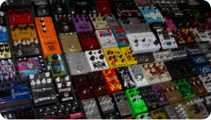

원본부터 채우기
이펙터를 모두 끄고 앰프 클린톤에서 Bass, Middle, Treble을 12시 방향에 둔 뒤 원음의 밸런스부터 잡습니다.
앰프와 이펙터 연결 및 톤 메이킹

기타 톤은 기타 자체의 소리뿐만 아니라 앰프, 이펙터, 연결 순서에 따라 크게 달라집니다. 처음부터 장비를 많이 쓰기보다는 앰프의 기본 노브를 이해하고, 필요한 이펙터를 하나씩 연결해 보는 것이 좋습니다.
기타에서 나온 신호는 보통 튜너와 드라이브 계열을 먼저 지나고, 코러스 같은 변조 계열과 딜레이/리버브 같은 시간 계열은 뒤쪽에 놓습니다. 이 순서를 알면 소리가 지저분하게 겹치는 문제를 줄일 수 있습니다.
| 노브 이름 | 기능 및 역할 | 톤 메이킹 팁 |
|---|---|---|
| GAIN / DRIVE | 입력 신호의 크기를 키워 소리를 찌그러트리는 역할입니다. | 낮으면 맑은 클린톤, 높으면 묵직한 락 사운드가 됩니다. |
| BASS | 사운드의 저음역대와 무게감을 조절합니다. | 너무 높이면 소리가 뭉개지고, 너무 낮추면 빈약하게 들립니다. |
| MIDDLE | 사운드의 중음역대와 존재감을 조절합니다. | 밴드 합주에서 기타 소리가 묻히지 않게 해 주는 핵심 노브입니다. |
| TREBLE | 고음역대의 선명함과 찰랑거림을 조절합니다. | 소리를 시원하게 만들지만, 너무 높이면 날카롭게 들릴 수 있습니다. |
| PRESENCE | Treble보다 더 높은 초고음역대의 날카로움을 제어합니다. | 최종 사운드의 선명도와 공기감을 미세하게 조정할 때 사용합니다. |
| MASTER / VOL | 앰프에서 최종적으로 출력되는 전체 볼륨을 조절합니다. | Gain으로 만든 드라이브 질감을 유지하면서 음량만 키울 때 사용합니다. |
이펙터를 모두 끄고 앰프 클린톤에서 Bass, Middle, Treble을 12시 방향에 둔 뒤 원음의 밸런스부터 잡습니다.
혼자 연습할 때 좋은 드라이브 양보다 합주에서는 조금 줄이는 편이 더 선명하게 들립니다.
Middle이 너무 낮으면 기타가 밴드 사운드 속에 묻힐 수 있으므로 합주 상황에서 꼭 확인해야 합니다.